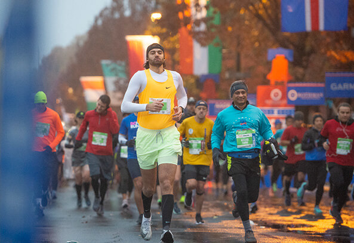

About
The Philadelphia Marathon has grown tremendously since our first race in 1994. What started as a small local
event of just 1,500 participants has become one of the top-10 marathons in the country. Our beautiful and scenic
course takes runners past historic landmarks, through urban neighborhoods, and along Philadelphia's picturesque
waterfronts. Of course, you can't forget the crowds.
Each year, spectators line the course, eager to cheer on runners, because there's nothing we love more in this
town than champions.
Race Weekend 2020 features the AACR Philadelphia Marathon on Sunday, November 22; the Dietz & Watson Half
Marathon, Rothman Orthopaedics 8K and Dunkin' Kids Fun Run on Saturday, November 21; and a free two-day Health &
Fitness Expo on Friday, November 20 and Saturday, November 21.
The Philadelphia Challenge is now closed! If you registered for the Philly Challenge, registration links for the
Blue Cross Broad Street Run 10-Miler will be emailed to you in February.